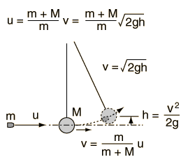

Ballistic Pendulum
| 
| In the back courtyard of the munitions factory hung an old, scarred block of wood. As quality control for the cartridges coming off the assembly line, someone would regularly take a gun to the courtyard and fire a bullet into the block. Measuring the height of the swing revealed the speed of the bullet, but since the block was increasing in mass with the added bullets, the mass of the block had to be checked as well as the mass of the bullet being fired. |
Comments on calculation: If a value for the velocity of the bullet, u, or either of the masses is entered, the velocity v after the collision and the height of swing is calculated. If either the velocity v after the collision or the height h is entered, then the other values will be calculated presuming the current values of the masses. A value of g = 9.8 m/s2 is assumed in the calculation.
|